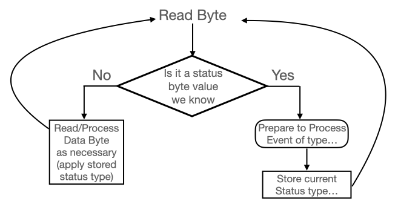

MIDI Parser: Architecture
A straight forward MIDI file parsing project.

The architecture of the code base is pretty straight-forward. However, there are a couple of specific technical points which seem to surface the most trouble for developers just coming to MIDI. On this page, I'd like to address these two areas in the hopes of helping with some more specifics.
Technical points which may be the most confusing of this whole "new" MIDI thing:
Variable Length Quantity
Reading a variable length quantity (VLQ) is a bit strange but serves a vital purpose - fast data transfer! To appreciate this and avoid some frustration when dealing with MIDI, keep in mind that the priority of MIDI is to avoid latency at virtually all costs! What this means is that if it is possible to evaluate 7 bits per-byte instead of the full 8 - DO IT! AVOID THE EXTRA BIT!!!!!!! This may seem insignificant, but in highly performant systems - it's HUGE! And MIDI needs to be highly performant in transfering data since the human ear hears very minute delays.
As an example - we'll keep the code simple and straigh forward so it's clear. Let's start by saying we have a data array of unsigned bytes. Let's say there are a sufficient number of bytes in our data array. If we want to get the first two bytes of our data array into an unsigned short, we may do something like this (again - this is just one way):
The above code is a perfectly acceptable way to take individual bytes and place them into another "larger" variable. However, in the above code segment, we knew 2 things: 1)we were going to take 2 bytes from our data array and 2) every bit in the byte contributes to the overall value of the larger variable's value - but what happens when we don't know how many bytes we're going to need and we need to prevent the leading bit from contributing to the value contained in our larger variable? One way would be to add in a message that says something like [messagetype identifier:number of bytes to read] However, this just adds to the size of the data we have to transmit - not what MIDI is about. Though we do see messages like this, MIDI tries to minimize them.
Instead, what MIDI does is set the leading bit within the byte to indicate if the following byte needs to be evaluated as part of the larger value or not. So, what we now need to do is evaluate that leading bit. And all that means is if we need pull in the next byte or not. ie: if the first bit's value is:
- 0 - We're done reading for the value, no more bytes need to be read to get your value
- 1 - We read the next byte and associate the last 7 bits as part of the larger value
Let's take a look at the issue. We'll break it down into two parts. The first will be evaluating and making sure we clear the initial bit and next will see how to properly place our smaller bytes into larger values.
So why UInt32 as the "larger" value in the code above and not a UInt64 or some other larger value? Because within MIDI, the numbers we're dealing with are relatively small in terms of computers. For example, there are only 12 notes and at the high level, 10 octaves. Therefore, the largest number we need to represent any note is 120. Or, when we start talking about time deltas - in microseconds - we're still talking relatively small numbers for a computer to handle when it comes to typical musical delays - and that is what we're talking about with MIDI. As time deltas are typically the largest values we're talking about within the MIDI stream/files, we need to take a look at what "realistic" time deltas are in today's music. Those delays - not normally days or hours - MAYBE, RARELY minutes, a 4 byte value is more than sufficient to store the largest values we'll encounter within our MIDI data.
Running Status
In order to understand the on-going/running status complexity (it really isn't all that complex - just a bit annoying to learn) we first need to understand the status byte of our MIDI event messages. It's important to keep in mind that there are many types of MIDI events and some have different status values organized differently. I bring this up just for you to know about which will make our discussion regarding running status much easier and less confusing. Therefore, keep in mind that this discussion is really around what's referred to as MIDI channel messages - which are the most commmon. The other meta and system message are very easy to identify and we'll discuss Those too and you'll see how easy they are, so for now, just be aware of them but don't worry about them for now.
So, with the MIDI messages we're discussing here, the way they work is: Staus Byte (follow by 1 or 2 data/Information bytes
The status bytes have very specific values which represent the message you're evaluating. I personnally think "status" byte is a poor naming convention, where I believe "message identify byte" would have been a more appropriate naming - BUT as it is, and will be, it's the "status" byte. So the status byte informs us of what the information is referencing. Before we take a look at the message's status byte, it is important to note that the single status byte consists of 2 parts - the message ID and the associated channel. There are 16 channels in MIDI which are used to send message to a particular processing component in the MIDI player. The "nnnn" component of the status byte represents the channel [0 - F]. With that said, below are a couple of examples:
| Status Byte (Binary:Hex) | Message Type | Number of following bytes |
|---|---|---|
| 1001nnnn : 0x9n | Note On | 2 |
| 1000nnn : 0x8n | Note Off | 2 |
So, the logical sequential parsing thought would go something like (We'll use 'Note On' as example):
- Read-Byte
- Is it a status byte of value 0x9n?
- If it is - read two more bytes - process
- Repeat...
Sticking with our previous example of "Note On" - let's consider a typical tritone C-Major chord. Here, we have 3 notes, C, E, G. Now when we take this to MIDI, what we'll ultimately have for each of these three nots is:
- Note On: note C - Velocity X
- Note On: note E - Velocity Y
- Note On: note G - Velocity Z
- Note Off: note C - Velocity X
- Note Off: note E - Velocity Y
- Note Off: note G - Velocity Z
And now we can see a little more clearly that the "Status" byte is somewhat repetitive - and now that we know MIDI - we know that's BAD!
Now that we know that's bad - what do we do about it? Well, we implement the "Running Status" implementation...
Now our logic becomes:
At one point regarding the "Running Status" conversation, there was mention of the C-Major chord. If you're not familar with chord construction - please take a look here: Chord Construction